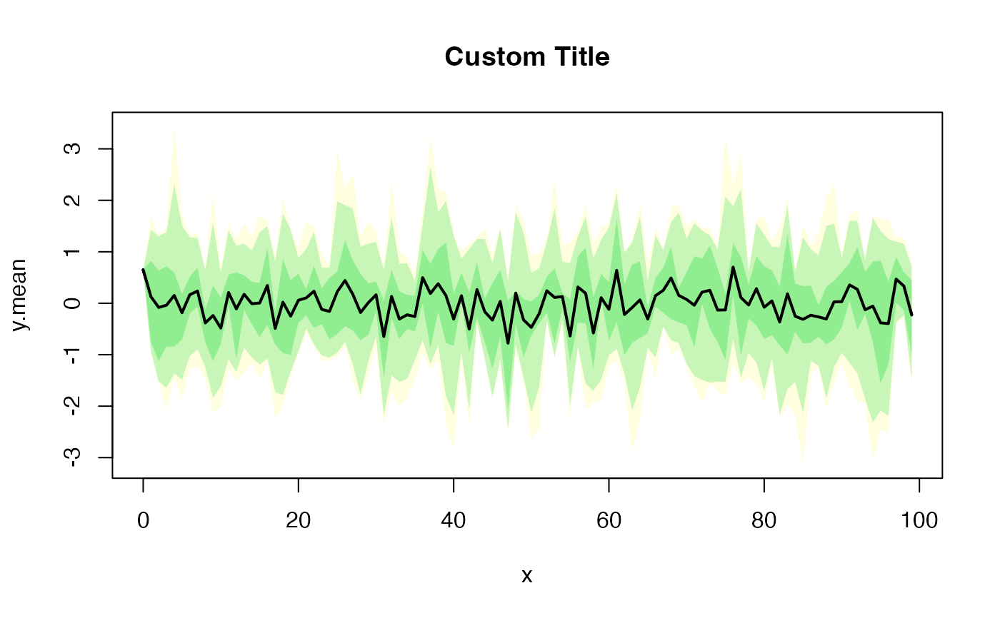

This function plots colored bands for time series percentiles and confidence
intervals. You can use it for outputs from simdiff,
esgmartingaletest, esgcortest.
esgplotbands(x, ...)
Arguments
| x | a times series object |
|---|---|
| ... | additionnal (optional) parameters provided to |
See also
Author
T. Moudiki
Examples
# Times series kappa <- 1.5 V0 <- theta <- 0.04 sigma <- 0.2 theta1 <- kappa*theta theta2 <- kappa theta3 <- sigma x <- simdiff(n = 100, horizon = 5, frequency = "quart", model = "OU", x0 = V0, theta1 = theta1, theta2 = theta2, theta3 = theta3) #par(mfrow=c(2,1)) esgplotbands(x, xlab = "time", ylab = "values")# Martingale test r0 <- 0.03 S0 <- 100 sigma0 <- 0.1 nbScenarios <- 100 horizon0 <- 10 eps0 <- simshocks(n = nbScenarios, horizon = horizon0, frequency = "quart", method = "anti") sim.GBM <- simdiff(n = nbScenarios, horizon = horizon0, frequency = "quart", model = "GBM", x0 = S0, theta1 = r0, theta2 = sigma0, eps = eps0) mc.test <- esgmartingaletest(r = r0, X = sim.GBM, p0 = S0, alpha = 0.05)#> #> martingale '1=1' one Sample t-test #> #> alternative hypothesis: true mean of the martingale difference is not equal to 0 #> #> df = 99 #> t p-value #> 0 Q2 -0.02247605 0.9821135 #> 0 Q3 0.01097937 0.9912620 #> 0 Q4 -0.15143897 0.8799376 #> 1 Q1 -0.13883348 0.8898638 #> 1 Q2 -0.19789551 0.8435326 #> 1 Q3 -0.22536473 0.8221601 #> 1 Q4 -0.26997124 0.7877443 #> 2 Q1 -0.31030336 0.7569826 #> 2 Q2 -0.09651805 0.9233043 #> 2 Q3 -0.10326583 0.9179609 #> 2 Q4 -0.14107269 0.8880992 #> 3 Q1 -0.23574755 0.8141156 #> 3 Q2 -0.25977019 0.7955805 #> 3 Q3 -0.39411812 0.6943415 #> 3 Q4 -0.38045993 0.7044191 #> 4 Q1 -0.43082365 0.6675332 #> 4 Q2 -0.40476849 0.6865209 #> 4 Q3 -0.42925352 0.6686715 #> 4 Q4 -0.39156135 0.6962239 #> 5 Q1 -0.35314096 0.7247336 #> 5 Q2 -0.47544463 0.6355175 #> 5 Q3 -0.34964305 0.7273493 #> 5 Q4 -0.24700014 0.8054196 #> 6 Q1 -0.25872509 0.7963845 #> 6 Q2 -0.33915908 0.7352083 #> 6 Q3 -0.29083689 0.7717845 #> 6 Q4 -0.24167853 0.8095292 #> 7 Q1 -0.21326793 0.8315566 #> 7 Q2 -0.19229562 0.8479045 #> 7 Q3 -0.14764776 0.8829210 #> 7 Q4 -0.12226792 0.9029347 #> 8 Q1 -0.26173882 0.7940666 #> 8 Q2 -0.38760408 0.6991411 #> 8 Q3 -0.37048701 0.7118112 #> 8 Q4 -0.39610783 0.6928779 #> 9 Q1 -0.39338787 0.6948789 #> 9 Q2 -0.28935025 0.7729184 #> 9 Q3 -0.25478126 0.7994206 #> 9 Q4 -0.33831558 0.7358418 #> 10 Q1 -0.41889724 0.6761987 #> #> 95 percent confidence intervals for the mean : #> c.i lower bound c.i upper bound #> 0 Q1 0.0000000 0.0000000 #> 0 Q2 -0.9641648 0.9425665 #> 0 Q3 -1.4257830 1.4416495 #> 0 Q4 -1.5605692 1.3392499 #> 1 Q1 -1.8571638 1.6142713 #> 1 Q2 -2.0543132 1.6817024 #> 1 Q3 -2.2592728 1.7984069 #> 1 Q4 -2.4420431 1.8571040 #> 2 Q1 -2.6192680 1.9108257 #> 2 Q2 -2.9535331 2.6795248 #> 2 Q3 -3.1200097 2.8113217 #> 2 Q4 -3.2581779 2.8256346 #> 3 Q1 -3.3682944 2.6529071 #> 3 Q2 -3.5193569 2.7045358 #> 3 Q3 -3.6158481 2.4174709 #> 3 Q4 -3.7744966 2.5599165 #> 4 Q1 -3.8978050 2.5071314 #> 4 Q2 -4.0593196 2.6837694 #> 4 Q3 -4.2008595 2.7065518 #> 4 Q4 -4.3492586 2.9156218 #> 5 Q1 -4.4767607 3.1240131 #> 5 Q2 -4.5796877 2.8092101 #> 5 Q3 -4.7139519 3.3015274 #> 5 Q4 -4.8254302 3.7570609 #> 6 Q1 -4.9522934 3.8097917 #> 6 Q2 -5.0793672 3.5964273 #> 6 Q3 -5.2001615 3.8706116 #> 6 Q4 -5.3048691 4.1529076 #> 7 Q1 -5.4136135 4.3628212 #> 7 Q2 -5.5120981 4.5381067 #> 7 Q3 -5.6127304 4.8352823 #> 7 Q4 -5.6694530 5.0113023 #> 8 Q1 -5.8294432 4.4707418 #> 8 Q2 -5.9952332 4.0357457 #> 8 Q3 -6.1064500 4.1848832 #> 8 Q4 -6.2216961 4.1510017 #> 9 Q1 -6.3416464 4.2431255 #> 9 Q2 -6.3854426 4.7601294 #> 9 Q3 -6.4980630 5.0192010 #> 9 Q4 -6.6218240 4.6926658 #> 10 Q1 -6.7627612 4.4050689esgplotbands(mc.test)# Correlation test nb <- 500 s0.par1 <- simshocks(n = nb, horizon = 3, frequency = "semi", family = 1, par = 0.2) s0.par2 <- simshocks(n = nb, horizon = 3, frequency = "semi", family = 1, par = 0.8) (test1 <- esgcortest(s0.par1))#> $cor.estimate #> Time Series: #> Start = c(0, 2) #> End = c(3, 1) #> Frequency = 2 #> [1] 0.17019209 0.09279227 0.18718789 0.22185835 0.14601034 0.19899949 #> #> $conf.int #> Time Series: #> Start = c(0, 2) #> End = c(3, 1) #> Frequency = 2 #> Series 1 Series 2 #> 0.5 0.083751429 0.2540906 #> 1.0 0.005143531 0.1790261 #> 1.5 0.101157771 0.2704393 #> 2.0 0.136829774 0.3036416 #> 2.5 0.059076143 0.2307465 #> 3.0 0.113285783 0.2817730 #>#> $cor.estimate #> Time Series: #> Start = c(0, 2) #> End = c(3, 1) #> Frequency = 2 #> [1] 0.7879729 0.7823533 0.8043743 0.7921554 0.7786005 0.8077114 #> #> $conf.int #> Time Series: #> Start = c(0, 2) #> End = c(3, 1) #> Frequency = 2 #> Series 1 Series 2 #> 0.5 0.7522620 0.8190677 #> 1.0 0.7458304 0.8141866 #> 1.5 0.7710721 0.8332881 #> 2.0 0.7570532 0.8226977 #> 2.5 0.7415392 0.8109245 #> 3.0 0.7749064 0.8361767 #>#par(mfrow=c(2, 1)) esgplotbands(test1) esgplotbands(test2)